A LadderIDE é um ambiente para programar um CLP em linguagem LADDER: você desenha o programa, testa na simulação (com processos animados ou com o Factory IO) e transfere para a placa ESP32. Este guia mostra cada tela e como usá-la. Use o sumário à esquerda ou a busca.
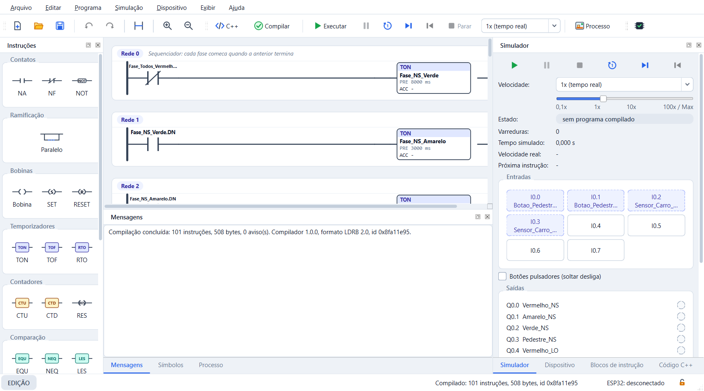
Os painéis podem ser arrastados, soltos como janelas ou fechados. Exibir → Painéis reabre um painel e Exibir → Restaurar layout padrão volta à organização original. Exibir → Travar layout (Ctrl+Alt+L) impede mudanças acidentais.
Arquivo → Novo (Ctrl+N). Dê um nome e escolha o tipo de processador na lista, agrupada por família, como no RSLogix 500. Ele define quantas entradas e saídas o projeto tem, quantas memórias, temporizadores, contadores e registradores pode usar e o tamanho do programa (instruções e redes). Abaixo da lista aparecem os limites e as portas de comunicação.
Se o programa passar da memória do processador, o compilador acusa memória de programa esgotada. Para mudar depois: Programa → Propriedades.
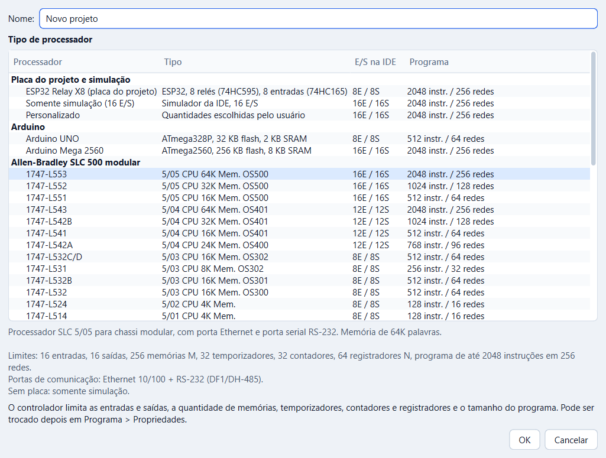
Projetos de exemplo ficam na pasta examples da instalação (Arquivo → Abrir); cada ambiente animado também tem o botão Abrir exemplo.
| Ação | Como fazer |
|---|---|
| Inserir | Arraste da paleta até a área destacada em azul (entre contatos, num ramo, na coluna de saídas ou abaixo da última rede para criar outra) |
| Mover | Arraste o elemento para outro ponto |
| Editar tipo, operando e preset | Duplo clique no elemento (ou Enter) |
| Trocar só o endereço | Duplo clique no nome escrito acima do elemento |
| Ramo paralelo (OU) | Arraste "Paralelo" ou botão direito → Envolver em ramo paralelo |
| Excluir | Delete |
| Redes | Botão direito no número da rede: inserir, comentar, excluir; Ctrl+R cria uma rede |
| Desfazer / refazer | Ctrl+Z / Ctrl+Y |
| Zoom | Ctrl + roda do mouse, Ctrl++ / Ctrl+-, Ctrl+0 |
O duplo clique abre a janela do elemento: tipo (por exemplo, TON, TOF ou RTO), operando (endereço ou símbolo) e, nos temporizadores e contadores, o preset. Embaixo aparece um lembrete dos endereços válidos.
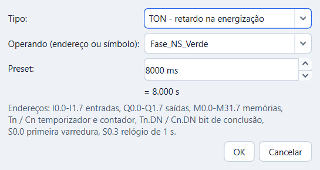
Duplo clique no nome acima do contato ou da bobina abre uma caixa sobre o diagrama. Digite o endereço ou escolha um símbolo da lista; Enter confirma e Esc cancela. Com o Factory IO configurado, a lista também mostra a porta da cena ligada a cada endereço.
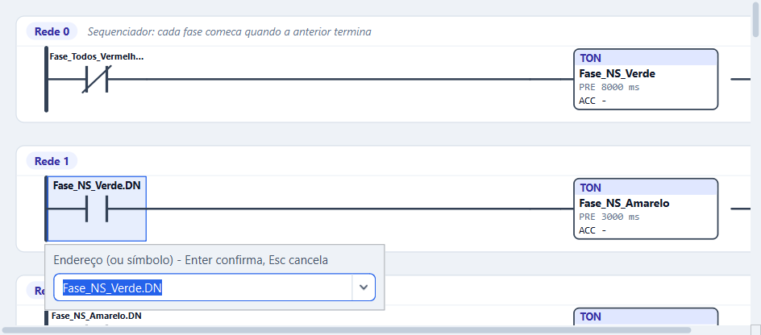
Endereços: I0.0–I1.7 entradas, Q0.0–Q1.7 saídas,
M0.0–M31.7 memórias, T0 temporizadores, C0
contadores, T0.DN/C0.DN bit de concluído, N0 registradores,
S0.0 primeira varredura e S0.3 relógio de 1 s.
Na aba Símbolos você dá nomes aos endereços (por exemplo, Partida =
I0.0) e escreve um comentário. O diagrama, o C++ e a simulação passam a mostrar o
nome. Renomear um símbolo atualiza todos os elementos que o usam.
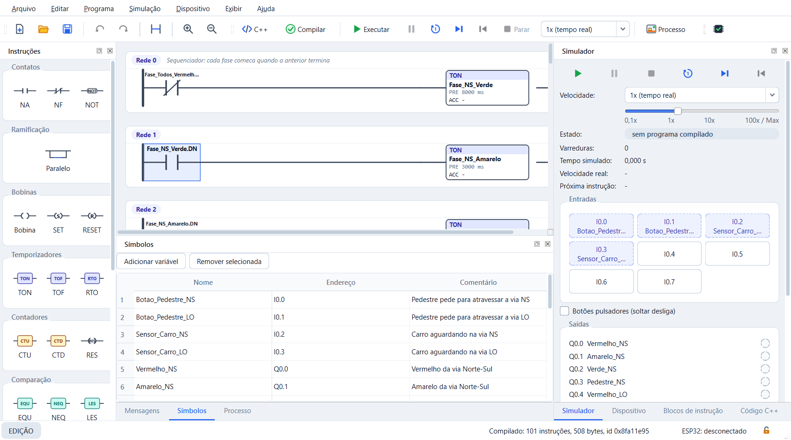
Mostra o diagrama traduzido para C++ antes mesmo de compilar, refeito a cada edição: contatos em
série viram &&, ramos paralelos ||, contato NF !.
Clicar numa linha seleciona a rede no diagrama e vice-versa. Erros aparecem como comentários
// ERRO na rede. Copiar código e Salvar .cpp exportam o arquivo.
Gravar na placa... (também em Dispositivo → Gravar C++ na placa) compila esse C++ com o PlatformIO e grava direto no ESP32, no Arduino UNO ou no Arduino Mega pela USB. Escolha a placa e a porta; Compilar só confere se cabe, Gravar envia. No UNO e no Mega, os relés e as entradas usam os pinos da aba Placa. A placa passa a rodar o programa sozinha e o monitor serial (115200 bit/s) narra cada mudança. Atenção: isso substitui o firmware do CLP; para voltar a transferir pela IDE, grave o firmware de novo. Na primeira vez de cada tipo de placa, o PlatformIO baixa o compilador.
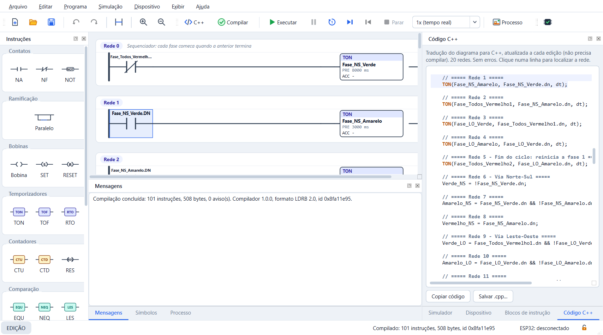
O programa como lista de instruções (IL), na ordem em que o CLP executa: mnemônico, operando, símbolo e o que cada instrução faz. Na simulação as linhas ficam verdes quando o resultado lógico é 1.
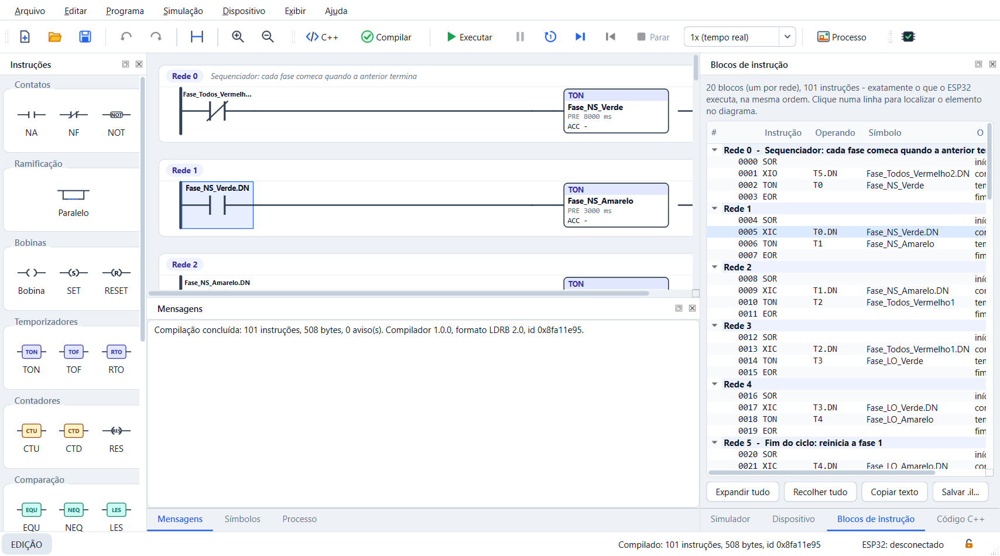
Erros e avisos aparecem em Mensagens com o número da rede; clique na mensagem para selecionar o elemento com problema. Programas com erro não são simulados nem transferidos.
| Tecla | Ação |
|---|---|
| F5 | Executar continuamente |
| F6 | Pausar |
| F10 | Uma varredura |
| F11 | Uma instrução (a instrução atual fica destacada) |
| Ctrl+F5 | Reiniciar (partida a frio) |
| Shift+F5 | Parar e voltar à edição |
| Ctrl+. / Ctrl+, | Acelerar / desacelerar |
| Ctrl+; | Voltar ao tempo real (1×) |
Durante a simulação, o que conduz fica verde e as caixas mostram PRE, ACC e os bits. O painel Simulador mostra o estado, as varreduras, o tempo simulado e a velocidade real; as Entradas são botões (marque Botões pulsadores para que soltem sozinhos) e as Saídas acendem conforme o programa. O tempo é virtual: acelerar não muda o resultado.
O programa comanda um processo de cada vez, por isso Ambiente animado, Factory IO e Placa ficam num só painel, com um seletor no topo. O seletor marca o que está ativo (por exemplo, "Ambiente animado ● em uso"). O botão Processo da barra de ferramentas abre o painel.
Escolha um processo desenhado: semáforo, silo de envase, portão, elevador, linha de garrafas, compressores ou misturador. As saídas Q acionam motores, válvulas e lâmpadas, e os sensores do processo alimentam as entradas I (essas entradas aparecem marcadas no painel Simulador). Clique nos botões desenhados no próprio ambiente. Criar símbolos adiciona os nomes dos pontos de E/S ao projeto e Abrir exemplo carrega uma solução pronta.
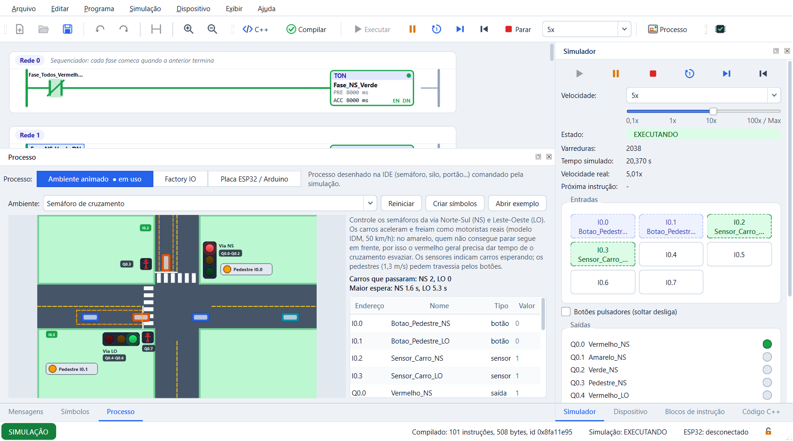
O ambiente Simulador de E/S tem uma botoeira para cada entrada e uma lâmpada para cada
saída do controlador do projeto: trocando o controlador, a quantidade muda. Clique na
etiqueta ao lado da botoeira (P NA, P NF, C NA, C NF) para trocar o tipo:
pulsador ou chave com trava, normalmente aberto ou fechado. O Simulador BCD tem uma
thumbwheel de 4 dígitos, que escreve N0 em BCD (converta com FRD), e um display
que mostra N1 em BCD (escreva com TOD).
Liga a simulação a uma cena 3D do Factory IO. No Factory IO, escolha o driver Modbus TCP/IP Server e inicie a cena. Na IDE, informe o IP (o Host do driver), a porta e o Slave ID; Testar confere se o Factory IO responde, sem escrever nada. Depois clique em Conectar. Os sensores da cena viram entradas I e as saídas Q comandam os atuadores. Enquanto conectado, a simulação roda em 1×.
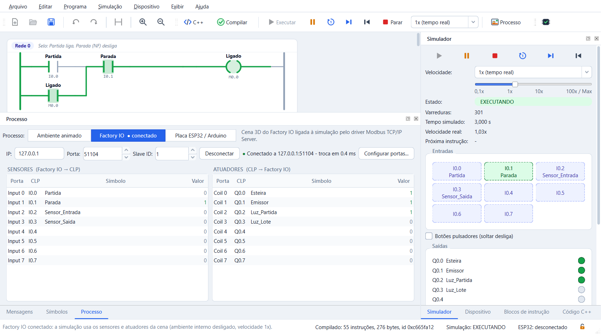
A tabela mostra cada porta do driver com o endereço no CLP e o valor atual. A coluna Símbolo é editável (duplo clique). Configurar driver... mostra as opções na mesma ordem da página Configuration do driver (Auto connect, Write/Read Digital, Write/Read Register, Scale, Offset e Count de cada tabela) e confere a configuração enquanto você edita:
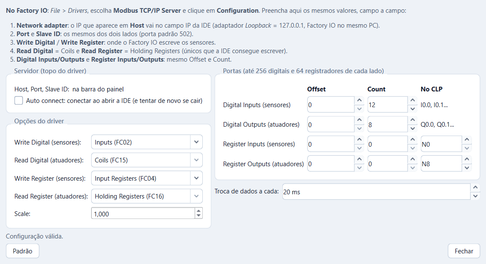
A placa simulada roda no PC o mesmo firmware C do CLP e conversa com a IDE pelo mesmo protocolo da placa real. Ligar ESP32 virtual (ou Ligar Arduino Mega virtual) inicia o dispositivo virtual; depois o fluxo é o da placa real: Transferir programa, RUN, STOP e Reiniciar placa. Clique nas entradas desenhadas (IN1… IN8) para acioná-las; os relés mudam conforme o programa.
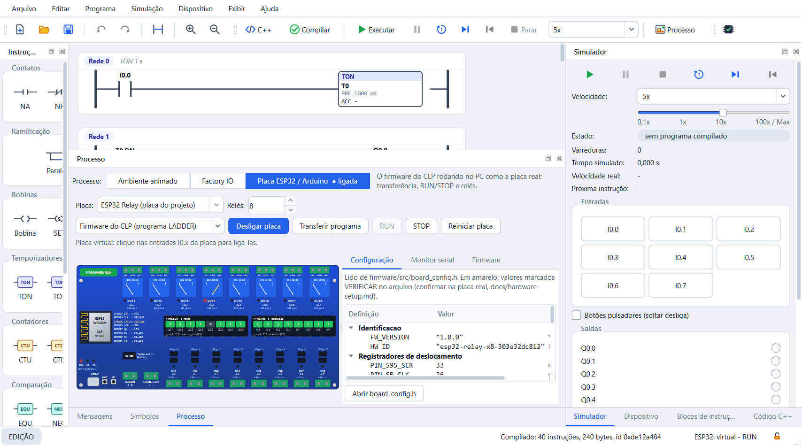
No topo, Placa escolhe entre ESP32 Relay (1 a 8 relés), Arduino UNO (1 a 8) e Arduino Mega 2560 (1 a 16), e Relés define quantos relés o módulo tem. A troca só é possível com a placa desligada. Se o projeto usa mais E/S do que a placa tem, o painel avisa e oferece ajustar o projeto. No Arduino, os pinos usados pelos relés e pelas entradas ficam destacados.
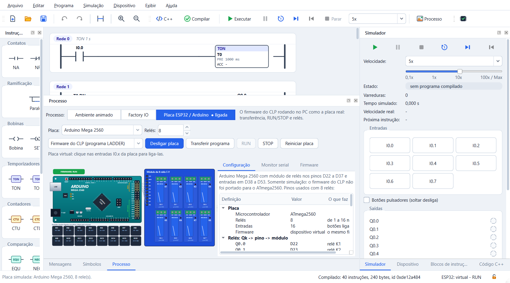
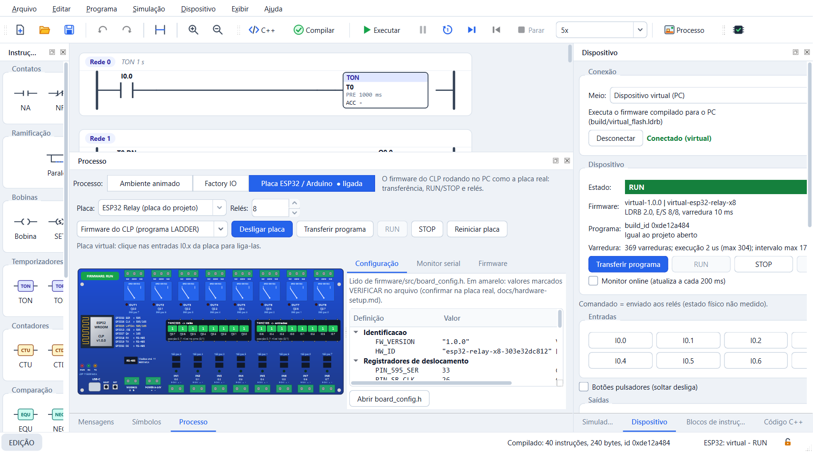
Se a comunicação cair, a IDE avisa e tenta reconectar a cada 2 s. O CLP continua executando sem a IDE.
Antes de transferir, Programa → Verificar para ESP32 gera um relatório: compilação e imagem, validação pelo código C do firmware, equivalência entre o simulador e o firmware (400 varreduras), E/S da placa, memória e limites, temporização e, com a placa conectada, o tempo de varredura medido.
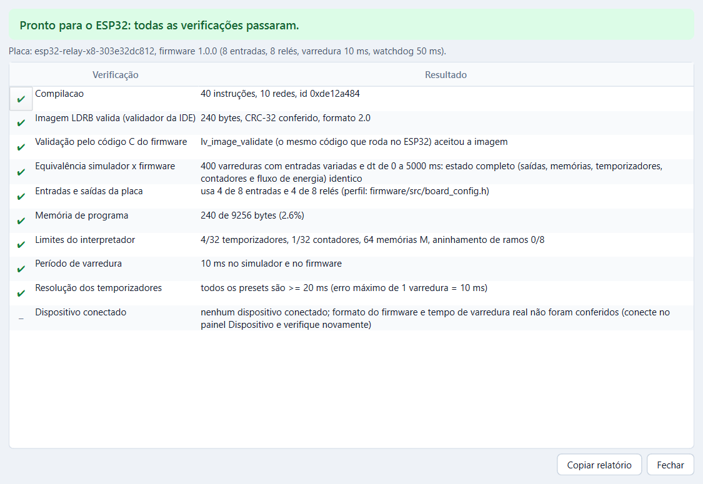
Ajuda → Como funciona a comunicação (Shift+F1) mostra por onde o programa passa: do editor ao compilador, dele ao simulador (ambiente ou Factory IO) e à placa. Os caminhos em uso acendem; clique num bloco ou numa seta para ver a explicação. As outras abas detalham o quadro do protocolo LDP, a transferência passo a passo, o Modbus TCP do Factory IO e o tráfego ao vivo.
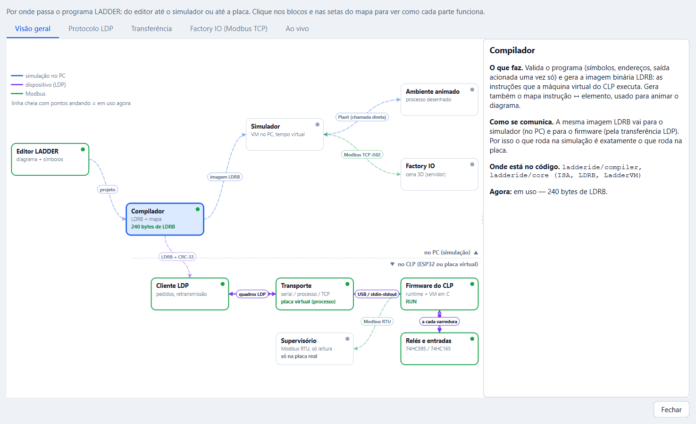
Na aba Ao vivo, cada pedido e resposta trocados com a placa aparece no log:
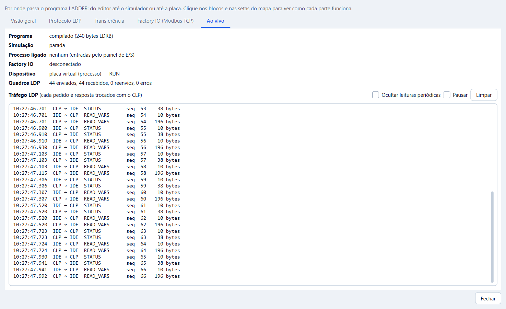
Exibir → Tema: Claro, Escuro ou Seguir o Windows. Ctrl+Shift+T alterna entre claro e escuro. A escolha fica salva.
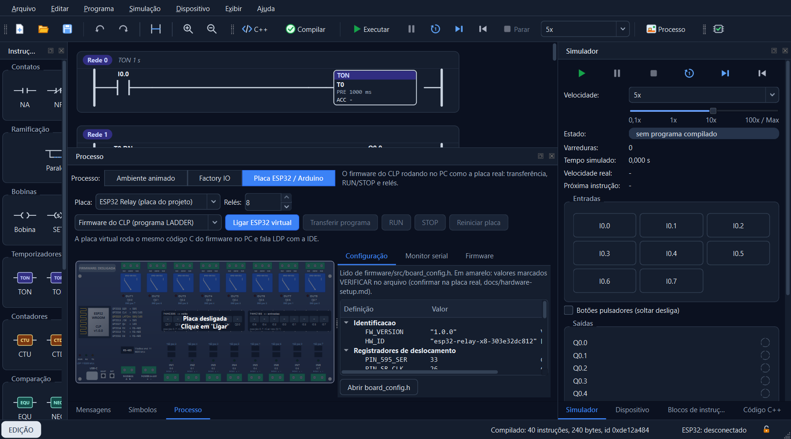
| Atalho | Ação |
|---|---|
| Ctrl+N / Ctrl+O / Ctrl+S | Novo, abrir, salvar |
| Ctrl+R | Nova rede |
| F7 | Compilar |
| Ctrl+F7 | Código C++ |
| F12 | Blocos de instrução |
| F5 / F6 / Shift+F5 | Executar, pausar, parar a simulação |
| Ctrl+E | Ambiente animado |
| Ctrl+Shift+E | Placa ESP32 / Arduino |
| F8 | Transferir programa |
| F9 | Verificar para o ESP32 |
| F1 | Referência das instruções |
| Ctrl+F1 | Este guia |
| Shift+F1 | Como funciona a comunicação |
| Ctrl+Shift+T | Alternar tema |
| Ctrl+Alt+L | Travar layout |
A LadderIDE é um trabalho acadêmico e não é um CLP de segurança. Não use para proteger pessoas ou equipamentos. Teste sempre na simulação antes de ligar cargas reais, e mantenha uma parada de emergência física, independente do CLP.